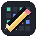

Start with a transparent canvas.
Canvas boundaries change; pixels are never scaled.
Each dimension can be 1–256 pixels.
Save changes to before closing?
Draw on the selected layer and frame. The preview loops independently while you work.
PNG is a finished, flattened image. A Pixr file (.pixr) is an editable document that keeps layers, frames, animation settings, palettes and other project data.
Even brushes extend right and down: a 2 px brush at (x, y) paints (x…x+1, y…y+1). Opacity replaces pixels directly; repeated passes do not accumulate alpha.
Onion overlays the preceding frame in translucent blue as a drawing guide. Drop PNG images or Pixr project files onto the app to open them. Drag tabs to reorder documents.
Browser preferences are optional; your artwork is never automatically stored.